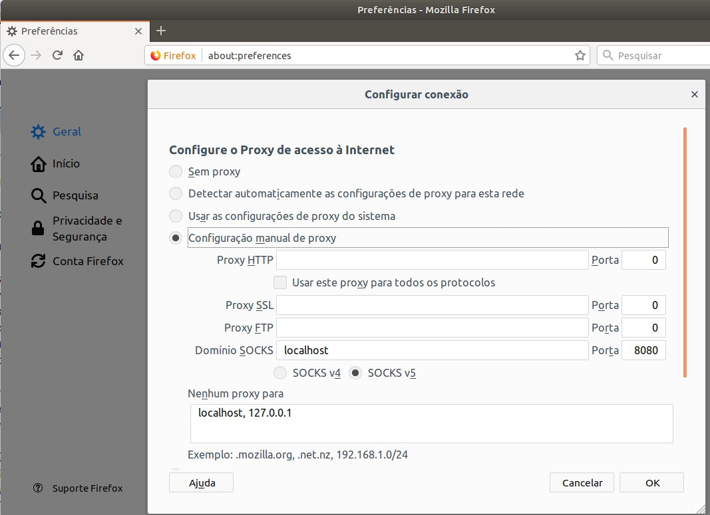

How To Route Web Traffic Securely Without a VPN Using a SOCKS Tunnel
A SOCKS proxy is basically an SSH tunnel in which specific applications forward their traffic down the tunnel to the server, and then on the server end, the proxy forwards the traffic out to the general Internet.
$ ssh -D 8080 user@host
 Leia mais